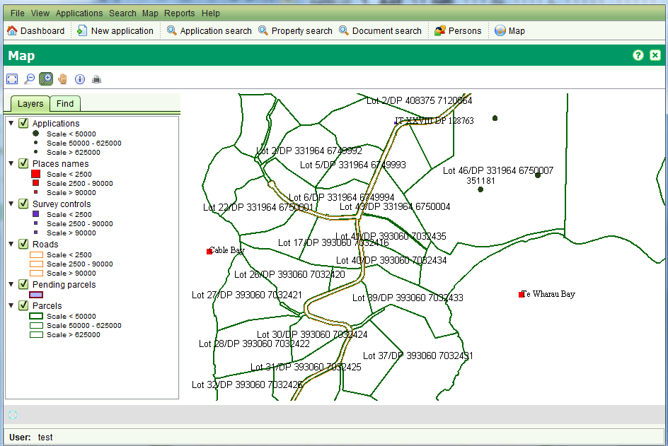
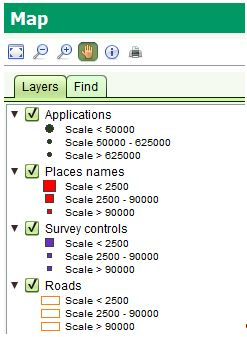
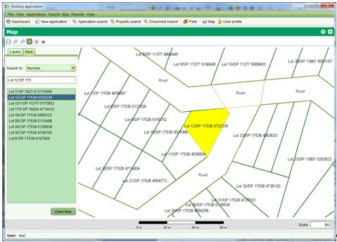

La Visualisation Plan Cadastral permet de naviguer et interagit avec les
données géospatiales gérées par SOLA. On y accède par le menu Plan >
Ctrl + Ouvrir Plan ou en sélectionnant 

Les Plan Cadastral inclue une barre de menu pour naviguer et faire des requêtes à travers deux onglets: une table des matières qui peut être utilisée pour contrôler les calques affichés sur le plan et un onglet de recherche qui peut être utilisé pour trouver des parcelles dans le plan. Les outils fournis par le plan cadastral sont:
Le Plan Cadastral possède des outils supplémentaires de cartographie pour l'édition et les tâches spatiales (ex: repèrage d'une demande). Ces outils sont décrits dans la sections Comment Faire.
L'échelle du plan peut être contrôlée en utilisant les outils de zoom. L'échelle désirée peut aussi être entrée directement dans la boîte de texte Echelle dans le coin en bas à droite du plan. Une barre d'echelle est affichée pour aider à déterminer les distances sur le plan. Notez que du aux variations de la résolution de l'écran, la barre d'échelle est seulement indicative et ne doit pas être utilisée pour obtenir des mesures précises depuis le plan. Lors du passage de la souris au-dessus du plan, les coordonnées de la localisation s'affichent dans le coin en bas à gauche sous les calques et onglets de recherche. Cette information peut être utilisée pour déterminer les coordonnées des entités sur le plan.
L'onglet des Calques identifie les calques des données géospatiales qui peuvent être affichées dans le plan. Il est possible de montrer ou cacher ces calques en
cochant ou effaçant les cases à cocher adjacentes aux noms de chaque calque.

En cliquant sur le triangle à côté de chaque nom de calque, la symbologie utilisée s'affiche pour illustrer les données géospatiales aux différentes échelles.
Par exemple, quand l'échelle est inférieure à 2,500, les villes et endroits sont illustrés avec un large carré rouge. Entre 2,500 et 90,000 un carré rouge moyen
est utilisé et au-dessus de 90,000 un petit carré rouge. Utiliser l'échelle du plan pour contrôler la symbologie des calques assure que l'affiche du plan reste sobre
de détails qui pourraient empècher la navigation ou la compréhension des informations affichées.
Les calques disponibles par défaut dans SOLA incluent

Il est possible d'utiliser l'onglet Trouver pour procéder à une recherche spatiale afin de localiser rapidement des parcelles ou autres éléments géospatials du plan.
Pour utiliser l'onglet Trouver, sélectionner le type d'élément géospatial à chercher dans le menu déroulant Recherche Par et en tapant le champ.
Une fois que suffisamment de caractères (entre 1 et 3) ont été rentrés, la recherche va commencer à lister les valeurs correspondantes au critère de recherche.
Pour visualiser un des résultats, double cliquer la valeur du résultat de la liste des résultats et le plan zoome sur la localisation de l'élément sélectionné puis le met en surbrillance.

L'outil Information peut être utilisé pour repèrer des éléments géospatiaux comme les parcelles, points de contrôle, noms de ville et d'endroits, routes, villages, etc. Commes les éléments géospatiaux sont souvent à proximité ou superposé, l'outil Information affiche des détails pour tous les éléments entourant la localisation sélectionnée. Cliquer l'onglet approprié pour voir les détails des divers claques des éléments. Noter que les onglets and les détails affichés par l'outil Information peuvent être configurées pour correspondre à celles requises par l'agence d'administration des terres.

L'outil Impression peut être utilisé pour imprimer le plan visualisé au format PDF.
Il est possible de montrer ou cacher les calques suivant les nécessités.
Il est possible de choisir une mise en page: A3, A4, A5 ou autre définies.
Dans la même boîte de dialogue, il est possible de choisir l'échelle. Une échelle approximative est déjà calculée d'après le plan.
Cliquer le bouton Imprimer pour générer un document contenant une image du plan. En utilisant l'affichage des rapports,
il est possible de sauvegarder l'impression sous différent format (PDF, DOCX et HTML) ou d'imprimer une copie papier. Pour l'impression au format PDF, faire attention d'avoir installer Adobe.
Noter que n'importe où dans le logiciel, il y a un bouton Imprimer et que en imprimant, un service de type Impression Cadastre
est enregistré dans la table des services et également marqué comme exécuté (si la fenêtre plan est commencée par une demande, ce service est attaché à la demande,
et complété du service Impression Plan).
Noter que les mises en page d'impression (ex: A3, A4, A5) peuvent être configurées pour correspondre à celles requises par l'agence d'administration des terres.
L'outil Export en KML peut être utilisé pour exporter la vue courante du plan dans un fichier KML basic. Ce fichier KML peut être chargé dans Google Earth et l'objet (ou les objets) peuvent être personnalisés. Avant l'export, il est nécessaire d'utiliser la Recherche Plan pour localiser et sélectionner un élément puis cliquer l'icône Export en KML. Ceci exporte les données du plan depuis le calque sélectionné en coordonnées long lat dans le fichier mapExport.kml dans le répertoire < user_home glt;/sola/ . En doucle cliquant sur le fichier s'affichera une vue des éléments sélectionnés dans Google Earth.
Voir aussi